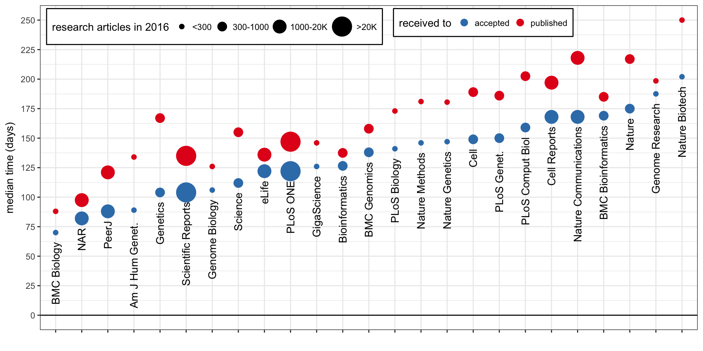
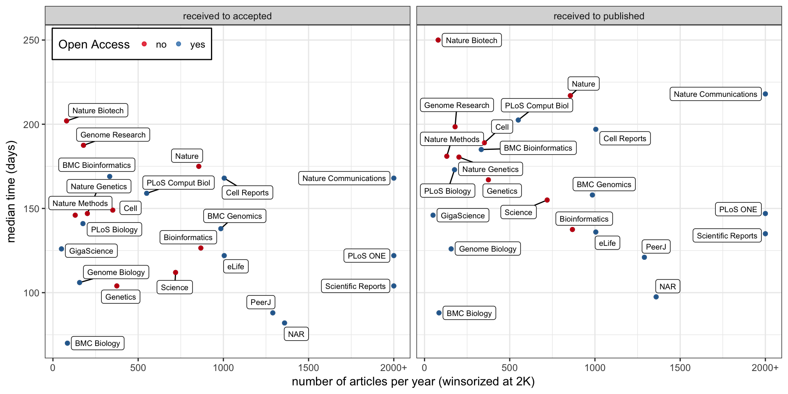
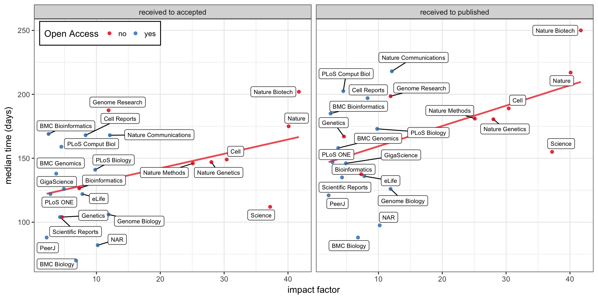
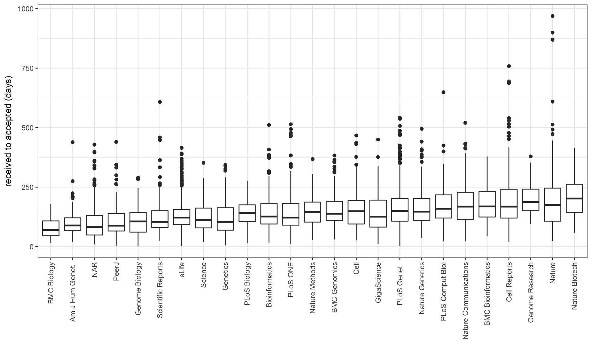

Journal comparison
Feb 23 2018 pubEdit Feb 24: Added variance graph and some examples of suspiciously fast publications.
Edit Feb 25: Added script and data to GitHub.
Some info about journals in my field.
Summary table
| Journal | Co. | IF | OA | APC | Other fees | Pub/year | Received-to-accepted in days. median (75th perc.) |
|---|---|---|---|---|---|---|---|
| F1000Research | - | 1.2 | Y | 1000 USD | - | ||
| PeerJ | - | 2.2 | Y | 1095 USD | - | ~1290 | ~88 (139) |
| eLife | - | 7.8 | Y | 2500 USD | - | 1018 | 121 (155) |
| GigaScience | OUP | 4.9 | Y | 2050 USD | - | ~50 | ~126 (195) |
| PLoS One | PLoS | 2.8 | Y | 1495 USD | - | ~22K | ~122 (182) |
| PLoS Comp Bio | PLoS | 4.5 | Y | 2250 USD | - | ~550 | ~159 (217) |
| PLoS Genetics | PLoS | 6.1 | Y | 2250 USD | - | 644 | 150 (202) |
| PLoS Biology | PLoS | 9.8 | Y | 2900 USD | - | ~176 | ~141 (175) |
| BMC Bioinformatics | BMC/S | 2.5 | Y | 2145 USD | - | ~333 | ~169 (231) |
| BMC Genomics | BMC/S | 3.7 | Y | 2145 USD | - | ~985 | ~138 (190) |
| BMC Biology | BMC/S | 6.8 | Y | 2785 USD | - | ~85 | ~70 (108) |
| Genome Biology | BMC/S | 11.9 | Y | 2975 USD | - | ~156 | ~106 (143) |
| Cell Reports | Els | 8.3 | Y | 5000 USD | - | ~1005 | ~168 (241) |
| Scientific Reports | Spr | 4.3 | Y | 1760 USD | - | ~20K | ~104 (151) |
| Nature Communications | Spr | 12.1 | Y | 5200 USD | - | ~3519 | ~168 (228) |
| NAR | OUP | 10.2 | Y | 2770 USD | pp9 | ~1359 | ~82 (131) |
| Genetics | - | 4.6 | 12m/+ | 2000 USD | pp/pf/psf | ~374 | ~104 (163) |
| AJHG | Els | 9.0 | 6m/+ | 5000 USD | 850 USD + pf | 237 | 89 (121) |
| PNAS | HWP | 9.7 | 6m/+ | 1450 USD | 1700 USD | ||
| Genome Research | CSH | 11.9 | 6m/+ | 2500 USD | 2500 USD | ~179 | ~188 (242) |
| Cell | Els | 30.4 | (12m/+) | 5000 USD | pf | ~351 | ~149 (193) |
| Lancet | Els | 47.8 | 6m/+ | 5000 USD | |||
| Science | AAAS | 37.2 | 12m | - | surprise | ~720 | ~112 (162) |
| Bioinformatics | OUP | 7.3 | + | 3000 USD | pp7/pf | ~868 | ~126 (180) |
| New England Journal Of Medicine | - | 72.4 | 6m | - | |||
| Nature Methods_ | Spr | 25.1 | N | - | pf | ~130 | ~146 (187) |
| Nature Genetics | Spr | 28.0 | N | - | pf | 202 | 147 (203) |
| Nature Biotech | Spr | 41.7 | N | - | pp5/pf | 80 | 202 (262) |
| Nature | Spr | 40.1 | N | - | ~855 | ~175 (246) |
Open Access (OA) journal:
Y: Yes.+: Authors can pay additional Article Processing Charges (column APC) to make it accessible immediately upon publication.12m: Articles are accessible after 12 months, either from the journal or PubMed Central/6m: Articles are accessible after 6 months, either from the journal or PubMed Central.(): Depending on the funding agencies.N: No.
Fees:
pp: Per page.ppX: Per pages in excess of X (if more than X pages).pf: Per figure.psf: Per supplementary file.
Sources
- Impact Factor for 2016/2017 from bioxbio.
- APC from Directory of Open Access Journals, or the journal.
Received-to-accepted time and Pub/year are based on articles published in 2016. After a PubMed search, the publication web-page was crawled to get the article type and dates of reception/acceptance. I considered research articles/letters/methods/reports but not reviews/editorial/perspective/erratum/opinion. Sometimes the DOI was not present in the PubMed results or there was a lot of publications to crawl so I analyzed a subset and extrapolated the numbers (~ marks approximated numbers). I still see some suspicious numbers (articles with very short/negative acceptance time). Hopefully the medians are still close to reality but these numbers should be taken with a grain of salt.
Some data has been produced, now it’s graph time !
Median time to acceptance/publication

Median time to acceptance/publication vs number of article published

Median time to acceptance/publication vs impact factor
I’m curious to see if it takes more time in some cases because a journal is more “picky” ?
The impact factor is not a good indicator of research impact but maybe it can be a proxy for a journal’s pickiness. Looking at the correlation with the impact factor, there’s a trend (with or without the first tier journals). Still, the journals are quite spread out.

Variance in time to acceptance
The ranking using the 75th percentile is not so different than the one using the median.

We see some publications with suspiciously short received-to-accepted times…
Suspiciously short received-to-accepted times
I’m not sure how each journal defines “received”. Some publications have acceptance times too short to be the peer-review time.
I even found two papers that have negative received-to-accepted times… In both the webpage and the PDFs, these papers were published 3 months before they were submitted: 10.1534/genetics.115.183194 and 10.1534/genetics.115.185181.
Anyway, looking at a few examples for each journal, some of the “fast” publications are about resources (databases, portal, websites) which makes sense, others look like research that would require peer-review longer than a few days…
For example, the “fastest” publications for each journal (among the publications I considered):
Script and data
I someone wants to do the same for other journals, I put my script there. The data I used is also there in a TSV file.
“Good” journals
- eLife is non-profit, open and modern.
- PLOS the pioneer in open-access.
- BMC, although it’s owned by Springer Nature publishing group.
- F1000 where the manuscript is “published” right away and then transparently peer-reviewed. Once peer-reviewed, it is indexed in PubMed etc.
- PeerJ is about open-access and cost-efficient publishing.
“Evil” publishing companies
- Elsevier.
- Springer Nature.